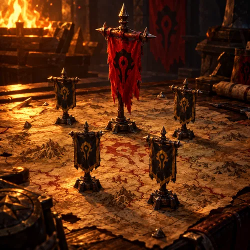
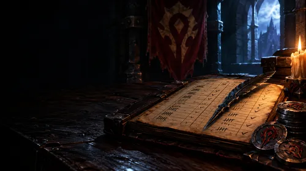
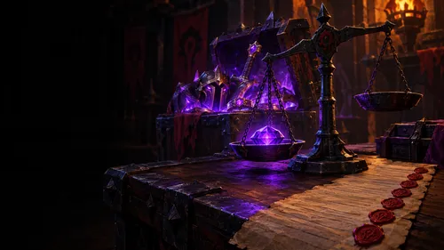

Officers only
Officer Tools
The war table. Build the comp, track who shows up, settle the loot and keep the roster honest. Everything runs in your browser — only the Discord posts leave it.
Raid night

Raid Comp Paste a Raid-Helper comp, fix specs and groups, post it and save the raid.
Attendance Top, middle and bottom at a glance, and every saved raid. Import the Okanvil export here.
Loot Priority Who gets each reserved drop. The Loot page's Priority tab.The guild
 Guild Roster
Import the in-game export, ranks, mains & alts. Feeds every tool.
Vacations
Who's away. Officers edit, repost and see the calendar.
Guild Roster
Import the in-game export, ranks, mains & alts. Feeds every tool.
Vacations
Who's away. Officers edit, repost and see the calendar.
 Lore & Stories
Write a tale, post it to Discord and the Chronicles page.
Lore & Stories
Write a tale, post it to Discord and the Chronicles page.